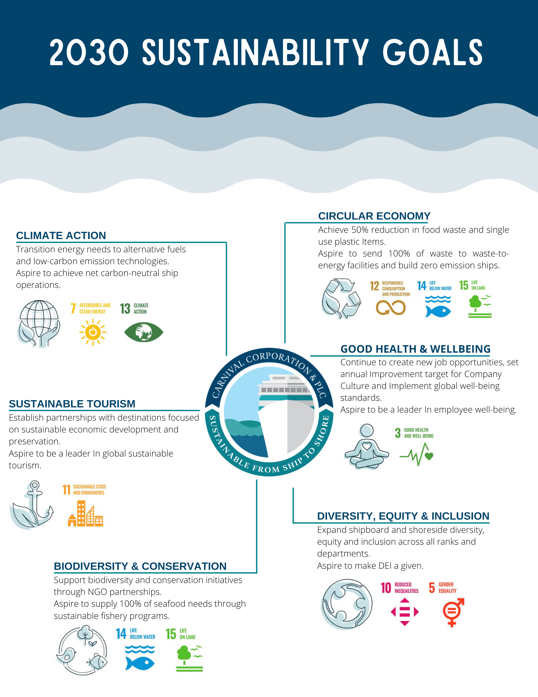

|
JUSTIN R. LOPEZTechnical Trainer and Developer 6 years in the E-Learning field |
BIO
6 years of experience in the E-Learning field with expertise in LMS administration, technical writing, providing 1on1 support, and facilitating developed training. Worked within two universities and two cruise lines dealing with AGILE cross-functional environments, ambiguity, and branding guidelines. Managed tier 2 support, worked with vendors within budgets restraints, conducted needs analysis, and implemented change management procedures on training I redesigned with the assistances of SMEs and the feedback of stakeholders. Most recently, I’ve picked up data analysis, creating reports that highlight training stats and user experience per ship, department, and/or leaner.
PROJECT FOLIO
| ITEM | MATERIAL | INFO |
| L+D Course Dashboard | Highlights completion rates and evaluates user experience for a course, ship, department, position, or learner. Created report from the ground up. | |
| Line Manager Dashboard Guide | Intructs managers on how to access the Line Manager Dashboard to monitor their teams completion of CCL trainings. Developed content, theming and formatting. | |
| Porfolium Demo | Scripted, screen-recorded, and voiced tutorial on the Profolium Platform. Used as a student aid on Universitys info page. Created with Kaltura Capture. | |
| Royal IBT Refresher | Prepared agents to use the new booking platform. Developed all storyline, video, image, and text content seen in course. | |
| IBT User Deck | Developed click-by-click walkthrough of new system using PowerPoint animations. Developed all content seen in deck. | |
| Employee Evaluation Survey | Identified employees on track to be promoted using Google Scripts, Forms and Sheets. Report outputted employee based off tenure and score similarity in self-evaluation and manager evals. |
MEDIA FOLIO
 |
 | ||
Created multiple gifs to aid training content.
|
Created flyer for ShipMate Program that launched on all Ships.
|
Created infographic for CCL's 2030 Sustainability Goals.
|
Created infographics for designer roles at FIU.
|
FOLIO BY COMPANY
CCL |
AU |
RCL |
FIU |
FAVORITE TOOLS
Rise 360 |
Camtasia |
Adobe Photoshop |
MS PowerBi |
Storyline 360 |
TechSmith Capture |
Adobe Dreamweaver |
MS PowerAutomate |
Canva |
Procreate |